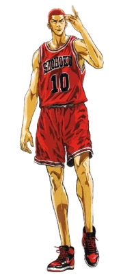
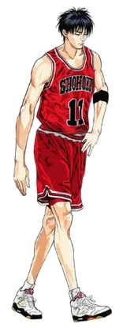
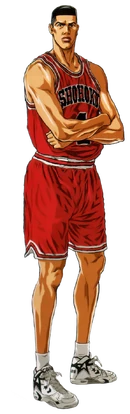
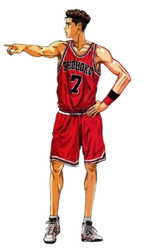

Acerca de la serie Slam Dunk
Slam Dunk (スラム ダンク Suramu Danku?) es un manga Shonen del género Spokon escrito e ilustrado por Takehiko Inoue. La trama sigue a Hanamichi Sakuragi, un estudiante de secundaria que decide practicar baloncesto para conquistar a Haruko Akagi, la chica de que está enamorado.

Personajes Principales



